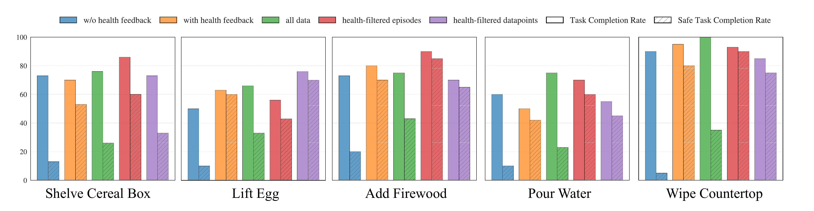

Experiments
What can you do with OopsieVerse?
1 Safety-aware data collection
OopsieVerse can provide real-time safety feedback during data collection, enabling data collectors to collect safer data.
This feedback is provided in two ways: (1) damage-based coloration and (2) health bars of tracked objects.
The health bars are particularly helpful when damage occurs outside the current camera view
(e.g., the wineglass falling behind the counter).
2 Imitation learning (IL)
Many real-world (or sim-collected) demonstration datasets mix safe and unsafe behavior. Using DamageSim, we can automatically flag trajectories that incur damage and filter them out to construct a dataset of only safe demonstrations. In the videos below, the top row shows an IL policy trained on the full dataset (including unsafe trajectories), while the bottom row shows a policy trained on the filtered safe-only demonstrations.
Pour Glass
Add Firewood
Lift Egg
Shelve Item
Wipe Countertop

3 Reinforcement learning (RL)
DamageSim lets us turn physically-grounded damage signals into a shaping reward that penalizes harmful interactions.
Combined with the task reward, this yields a learning signal that encourages agents to complete the task while minimizing damage.
We evaluate this idea in three settings: (i) pure RL on the Place Plate task with and without the damage reward (PPO),
(ii) behavior cloning on Move Glass of Water task followed by PPO finetuning with the damage reward,
and (iii) fine-tuning a Shelve Item policy—initially trained on the full IL dataset—using an additional damage-reward using DSRL.
The video below shows the training process for (iii), illustrating that over time the agent learns to reduce damage while maintaining high task performance.

4 VLA evaluations
We evaluate the safety of modern manipulation policies by benchmarking GR00T, a state-of-the-art Vision-Language-Action model
from NVIDIA. Even when GR00T achieves high task success, it frequently causes damage, resulting in much lower safe success
rates and degraded environment health. This underscores the limits of evaluating VLAs solely by task completion and highlights
the need for benchmarks and learning signals that explicitly account for harmful interactions.
Attach Camera
Open Microwave Door
Pick up Scrubber
Ignite Wood
Open Single Door
Turn on Microwave
Counter to Microwave
Turn on Stove

5 Sim2Real transfer
Our ultimate goal is safe real-world robot behavior, so we test whether policies trained with OopsieVerse transfer safely to real world.
Compared to a baseline IL policy trained on all data, a damage-aware IL policy trained on health-filtered episodes behaves
more cautiously in the Pour Water and Shelve Cereal Box tasks. It goes futher away from the laptop when pouring water
and learns to make space for the cereal box by pushing non-fragile objects like the crackers box instead of fragile objects
like glass bottles. Our experiments suggest that explicit damage signals obtained via OopsieVerse can translate into improved safety on hardware.
Pour Water (Safe + Unsafe Data)
Pour Water (Safety-filtered Data)
Shelve Cereal Box (Safe + Unsafe Data)
Shelve Cereal Box (Safety-filtered Data)